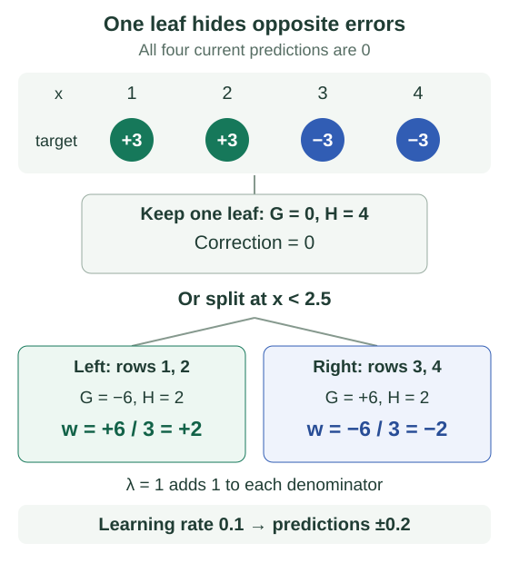

XGBoost, LightGBM & CatBoost
XGBoost, LightGBM, and CatBoost all improve an existing prediction by adding trees. Their practical differences include how they score a split, which splits they search, and how they handle categories. Follow four rows through a split first; those implementation choices will then have something concrete to act on.
Before this chapter: understand the residual-fitting example in gradient boosting. Here, a tree’s leaf value is a correction to the current prediction, not a prediction made from scratch. The derivations are optional.
Use slope and curvature to choose a leaf value
At the current prediction, the gradient says which direction increases a row’s loss. The Hessian, or second derivative, measures how quickly that slope changes. Write their values as $g_i$ and $h_i$ for row $i$; here $h_i$ means curvature, not a tree.
Inside one candidate leaf, add the gradients into $G$ and the Hessians into $H$. Let $\lambda\geq0$ penalize large leaf values. The quadratic approximation gives this correction $w$, provided $H+\lambda>0$:
For $G=-6$, $H=2$, and $\lambda=1$, the leaf value is +2. The negative slope favors raising predictions; curvature and the penalty limit the step. Learning rate 0.1 makes the actual score correction +0.2.
Derive the leaf formula
Let $F_i$ be the current score and $w$ a constant added to every row in the leaf. A second-order Taylor expansion of each row loss, summed over the leaf and with constant terms removed, gives
Its derivative is $G+(H+\lambda)w$. Setting that to zero gives the formula above. Positive curvature makes it a minimum. This version omits L1 regularization and additional constraints.
Compare one leaf with two
Take four rows with feature values $x=[1,2,3,4]$ and targets $y=[3,3,-3,-3]$. Suppose the current prediction is 0 for every row. Using half squared error, each row has gradient $g_i=F_i-y_i$ and curvature $h_i=1$, where $F_i$ is its current prediction. So the gradients are $[-3,-3,+3,+3]$.
A split at $x<2.5$ separates rows that need an upward correction from rows that need a downward correction. With $\lambda=1$, the statistics become:
| Region | Gradient sum $G$ | Curvature sum $H$ | Best value |
|---|---|---|---|
| Parent | 0 | 4 | 0 |
| Left child | −6 | 2 | +2 |
| Right child | +6 | 2 | −2 |
The opposite gradient sums cancel in one parent leaf. Separating them lets the children correct in opposite directions. Substituting their best values into $Q$ gives −6 for each child and 0 for the parent: an improvement of 12.
Let $\gamma$ be the cost of adding one leaf. Two children replace one parent, so a cost of 0.5 leaves gain 12 − 0.5 = 11.5.

With learning rate 0.1, the new predictions are $[0.2,0.2,-0.2,-0.2]$. Half squared training error falls from $4\times\tfrac12(3)^2=18$ to $4\times\tfrac12(2.8)^2=15.68$. That decrease, 2.32, differs from the split gain: the gain includes regularization and compares full candidate leaf values before shrinkage. It is not a promised change in the evaluation metric.
Check your understanding: what if $\lambda$ rises from 1 to 4?
The child values shrink from $\pm6/(2+1)=\pm2$ to $\pm6/(2+4)=\pm1$. The split gain becomes $\tfrac12(36/6+36/6)-0.5=5.5$. This candidate still passes the gain test, assuming the other split constraints hold; increasing the penalty reduced both its correction and its score.
Write the general split-gain equation
Use subscripts $L$ and $R$ for the child sums. Parent sums are their totals. Substituting each optimal leaf value into the quadratic and comparing the costs gives
This scores the unshrunk quadratic approximation. Other split constraints must still hold. For half squared loss each row has curvature 1; for binary log loss it is $p(1-p)$, so minimum curvature support is not generally the same as minimum row count.
Reduce the work required to search splits
Histogram methods group feature values into bins and accumulate gradient statistics per bin. Search scans bin boundaries instead of every distinct value. This can reduce compute and memory at the cost of threshold precision; multiple libraries support it.
Reuse the four rows above. Exact search can test the three gaps: 1.5, 2.5, and 3.5. Suppose a deliberately coarse histogram puts $x=1,2,3$ in one bin and $x=4$ in another. Its only available split is at 3.5. The ideal 2.5 boundary lies inside a bin and cannot be tested.
| Search | Best available boundary | Left / right $(G,H)$ | Split gain |
|---|---|---|---|
| Exact gaps | $x<2.5$ | $(−6,2)$ / $(+6,2)$ | 11.5 |
| Two coarse bins | $x<3.5$ | $(−3,3)$ / $(+3,1)$ | 2.875 |
For the coarse split, the gain is $\tfrac12(9/4+9/2)-0.5=2.875$. This is the tradeoff: fewer boundaries mean less search work, but a useful distinction can disappear. More bins can recover finer choices while increasing memory and work; compare validation results rather than assuming finer bins always help.
XGBoost’s original paper also develops sparsity-aware split search, approximate proposals, and efficient data access. Its learned default branch can route missing values at prediction time. The GBM systems chapter follows these choices through a numeric histogram example.
Choose which leaf grows next
LightGBM’s leaf-wise growth expands the eligible leaf with the largest gain. Different branches can reach different depths. Limit leaf count, depth, and minimum leaf support according to validation performance.
For example, suppose two current leaves have best eligible split gains 8 and 3. Leaf-wise growth splits the first one. If one of its new children then offers gain 6, it can grow again before the untouched leaf with gain 3. A depth limit still constrains every path, but it does not change that choice into level-wise growth.
Its GOSS technique retains large-gradient rows and samples/reweights smaller-gradient rows. Exclusive feature bundling combines suitable sparse features with limited overlap. These are specific techniques and settings, not guarantees that every run uses the same sampling.
Avoid a categorical encoding that reveals its own label
Suppose a category appears once. Encoding it with its mean training label directly gives that row its own target. An ordered statistic instead uses earlier matching-category rows in a permutation, along with a prior.
For a simple example, let the prior mean be 0.5 with strength 2. If earlier matching rows have labels 1 and 0, the encoded value is (1 + 0 + 2 × 0.5) / (2 + 2) = 0.5. If there are no earlier matches, use 0.5. The current row’s label never enters this calculation.
CatBoost’s ordered boosting is a separate technique addressing prediction shift in gradient estimation. The numeric encoding above illustrates the categorical-statistic idea, not the full library. Internal ordering does not replace external time- or group-based evaluation.
Compare configurations on the same task
| System | Useful distinction to investigate |
|---|---|
| XGBoost | Regularized leaf objectives and alternative tree-building methods |
| LightGBM | Histogram training and leaf-wise growth controls |
| CatBoost | Native categorical workflows and ordered techniques |
These are overlapping capabilities, not exclusive feature lists. Compare predictive quality, calibration where relevant, memory, and serving cost on identical valid splits with comparable tuning budgets.
- Fix the prediction setting first. Reserve a final test set; use a time split when predicting the future or a group split when repeated entities must stay together. Fit preprocessing only on the training portion.
- Tune the model you can afford to serve. Evaluate learning rate together with tree count, and control leaf count or depth and minimum leaf support. Early stopping chooses a round using validation data, so that data is part of model selection.
- Measure the full pipeline. Record the chosen validation metric, training time, peak memory, and prediction latency on the same hardware. Include categorical preprocessing and record versions and settings; library names alone do not define a reproducible comparison.
Sources and next steps
- XGBoost objective tutorial — Quadratic leaf values and split gains.
- XGBoost paper — Sparsity-aware search and systems design.
- LightGBM features — Histograms, growth strategy, and sampling techniques.
- CatBoost paper — Categorical processing and ordered boosting.